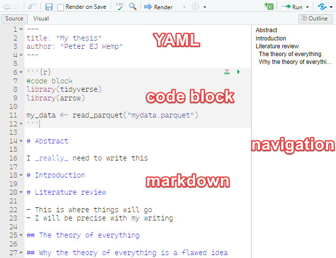

[1] 2Publishing using R and quarto
1 Why Quarto
Quarto is a publishing framework that works with R and RStudio (and python and Julia) to allow you to produce pdfs, word docs, websites and power points for publication. Using quarto you can combine your data cleaning, data analysis, model building and graph creation, with your writing and bibliography, all in one place. This means
- you don’t need to keep copy and pasting, or exporting results and graphs from R to your write up
- if the underlying data sets or models change any changes automatically filter through to your write up
- it’s easy to include the code that you use so readers can see exactly what you have done
Quarto also allows you to present your findings alongside your R code. This allows for better reproducibility of work and transparency in terms of methodology.
2 Creating your first quarto file
- create a new quarto document from the drop down
- fill in some basic details (you can edit these later), keep the default as HTML (a web page)

- You will be presented by an empty .qmd file
- Save this file where you want to work on it
2.1 The structure of a quarto file
A quarto file has three main components,
the YAML block at the top of the .qmd page allows you to specify metadata about the work, including authors, affiliations, type of output (e.g. HTML or pdf), the title, the date, license information, referencing style, location of the bibliography file etc. The YAML block needs to come at the top of the page and is delimited by the three dashes
---at the beginning and the end of the YAML blockcode blocks - quarto files allow you to intermix code blocks with text, you can define how quarto handles these blocks, e.g. displaying/hiding the code, suppressing warnings, or stopping the code block executing. More on this below
markdown - this is the text and image output of your work. Markdown offers . Whilst not as fully featured as a word processor Markdown allows you to create work with simple text formatting, tables, image manipulation, links and references. For more complex formatting you can inline HTML/CSS and latex code.

2.2 Visual editor
RStudio comes with a built in what you see is what you get (WYSIWYG) visual editor for quarto files. You can toggle between the source/text view and the visual editor at the top left of the editor. Most things you can do in the source editor can be replicated in the Visual editor, though the markdown produced can sometimes be messy, especially when dealing with hand made tables.

3 Markdown
3.1 Basic formatting
You can write a .qmd file much like you would write a plain text document, but it does also allow basic formatting using a language called markdown. Markdown lets you have text that is **bold**, *italic*and <u>underlined</u>, it allows for linking actions, such as hyperlinks to webpages through [webpages](https://en.wikipedia.org/wiki/Main_Page)
### This is sub header
#### This is an even smaller header
For something that might be less important, you can have multiple levels of subheading by adding more #s, for example ##### would be a level 5 heading, the more #s you have the smaller the heading.
3.2 Lists
If you need to create lists
- this is a list
- of bullet pointed
- created by
- items, which can be
- indented with four spaces
- before the hyphen `-`- this is a list
- of bullet pointed
- created by
- items, which can be
- indented with four spaces
- before the hyphen
-
You can also have:
1. numbered lists
2. by using numbers followed by
3. bullet points
4. You can embed [links](https://stackoverflow.com/questions/73066792/how-to-create-lettered-lists-using-quarto) in lists- numbered lists
- by using numbers followed by
- bullet points
- You can embed links in lists
3.3 Inserting images
If you have images that you would like to include in your writing you can insert them by using :

Make sure that your images are in the images/ folder and that the address you use includes the image type, here it is .jpg in images/brock.jpg. Try to give your images sensible names or place the images for your chapter in a sub folder of the images folder, e.g. images/chpt4/amy.jpg.
You can adjust the size and location of the image by using the curly brackets { } and setting the width, fig-align etc:
{width="10%" fig-align="left"}
If you’re including images you are likely to want to reference them. Quarto allows you to use links to images within your text. First, you will need to give your image a label, this is done by adding #fig-<name> to the end of the image line. Note, you need a hyphen - following the word fig, you can’t use an underscore or anything else. For example:
{width="10%" fig-align="left" #fig-brock}
You can now reference the image in your text using the @ symbol followed by the label, for example @fig-brock. This will automatically create a link to the image in the text and give the figure a number:
You can see a picture of Richard in @fig-brock, where the image is aligned to the right and is 10% of the page width.
You can see a picture of Richard in Figure 3.1, where the image is aligned to the right and is 10% of the page width.
Find out more about using figures in the quarto documentation
3.4 Questions: Intro to markdown
Create a new .qmd file to output html. Include:
- a header
- a sub header
- a list
- italic, bold and underlined text
- create a folder of images in the same location as your .qmd file
- an image
- adjust the width of the image and it’s alignment
- a reference to the image in the text
- experiment with the
Visualeditor - Extension: add multiple rows of images by looking at the quarto documentation
3.5 Quotes and references
If someone has said something interesting, you can block quote them by using the right arrow > quote goes here.
Dirt glitters as long as the sun shines. – Goethe
If you want to find out more about how to format your writing in quarto take a look at one of the helpsheet or the help website
When writing you might want to add academic references to your quarto document. This is very straight forward using `bibtex` - a structured way of recording references. You can find bibtex entries for most academic references through the Google scholar cite menu:
You can also hand-craft your own references if you can’t find them online.
You need to add this reference to a .bib file, you can do this by creating a new file in the same folder as your .qmd file and calling it my_references.bib. You then need to go to the YAML block at the top of your .qmd file and add the line bibliography: my_references.bib. This tells quarto where to look for your references file.
The name of the reference is at the top of each entry, in the example below kuhn1970structure:
@book{kuhn1970structure,
title={The structure of scientific revolutions},
author={Kuhn, Thomas S},
volume={111},
year={1970},
publisher={Chicago University of Chicago Press}
}To add a reference to your writing use [@kuhn1970structure] (remember the @ symbol) to get (Kuhn 1970). If you just require the year use [-@kuhn1970structure] - (1970). If you want to include multiple references together, use the ;, e.g. [@kuhn1970structure; @stoet2018gender] - (Kuhn 1970; Stoet and Geary 2018).
All your references will be included at the bottom of the website (go check them out once you have rendered your file) and you can quickly access reference information by hovering over the references inline in the text. Depending on the fields you provide and the format, e.g. @book and @article, the references will display differently.
3.6 Questions
Update your .qmd file to include:
- a quotation
- a hyperlink
- create a
.bibfile and link it from your YAML - find a bibtex entry on Google scholar and add it to your .bib file
- add a reference to your text
- add a second reference to your text
- add a reference to the text that only includes the year
4 Using code in your pages
One of the joys of using quarto is that it allows you to write R code directly into your .qmd file so the code you are talking about, the results of the code and the write up are all in one place. This has a few benefits:
- you don’t need to keep copy and pasting code and results from R to your support sheets
- if the underlying data sets change any changes automatically filter through to your write up
- it’s easy to include the code that you use so reviewers can see exactly what you have done
- others can copy and adapt your code for their own projects.
To add a code chunk we need to place it between ```{r} and ``` lines, the results will be automatically displayed below the code:
As some data sets are so big, you might want to focus on a few countries. Once you have declared an object in one code block you can use it in subsequent code clocks:
Note that there is no output from the above code, it applies a filter and stores <- it, it doesn’t have any print or output commands. Now that we have data loaded we can peek at the top few rows using head(<rows>):
# A tibble: 3 × 2
CNT TCHTYPE
<fct> <fct>
1 Georgia Mathematics Teacher
2 Georgia General Teacher
3 Georgia Mathematics TeacherBut maybe we want to show the reviewer some code without actually running it. To do this we can pass variables to the code chunks through the use of #| setting: value that tell quarto how to handle each chunk. For example, by adding #| eval: false to the top of the code chunk. The code then displays, but doesn’t run (evaluate):
We might want to do the opposite, to run the code chunk but display the output and not the code that produced the output. To do this we can either fold the code by adding #| code-fold: true to top of the code chunk:
Code
# A tibble: 4 × 5
CNT n median_age males females
<fct> <int> <dbl> <dbl> <dbl>
1 Germany 3631 44 1449 2141
2 Georgia 3202 52 432 2727
3 Korea 3614 44 1584 2025
4 Portugal 3487 51 1051 2407Or we can hide the code entirely by adding #| echo: false
# A tibble: 4 × 5
CNT n median_age males females
<fct> <int> <dbl> <dbl> <dbl>
1 Germany 3631 44 1449 2141
2 Georgia 3202 52 432 2727
3 Korea 3614 44 1584 2025
4 Portugal 3487 51 1051 2407The above examples show how you can output tables and simple sums to the screen, you might also want to output calculated values and graphs. Imagine we want to add the number of male teachers to a report, in the middle of some text. First we need to calculate this value and store it in an object male_num. Note here that we use the pull(<column>) command, this returns the vector stored in the males column, rather than the column datatype.
Now that this has been calculated we can insert it into our text using the inline Georgia, Germany, Korea, Portugal and 4516 commands:
> The number of male teachers in the PISA data set for Georgia, Germany, Korea, Portugal is 4516
The number of male teachers in the PISA data set for Georgia, Germany, Korea, Portugal is 4516.
The great thing about the above is that if the data set changes, the names and the number will automatically update.
4.1 Loading data sets
For the creation of this book we are keeping the data sets in the /data/ folder. I’ll create a separate chapter on loading data from web locations and local hard drives that students can refer to, so you can reference that in your chapters without having to repeat yourselves. To use the data sets you can load them from the data folder using the read_parquet(<location>), .parquet, they are pretty small (think ~30Mb rather than 2Gb) and relatively fast to load.
4.2 Including graphs
To add graphs to your booklets use the {r} coding blocks as normal. Create your graph and it should display. You can add a caption to the graph using the #| fig-cap: <text> command:
```{r}
#| fig-cap: median age of teacher by country
#| warning: false
# get number of male teachers in total
graph_data <- teacher_df %>%
filter(TC001Q01NA %in% c(1,2)) %>%
mutate(gender = ifelse(TC001Q01NA == 2, "male","female")) %>%
group_by(CNT, gender) %>%
summarise(median_age = median(TC002Q01NA))
ggplot(data=graph_data,
aes(x=CNT, y=median_age, fill=gender)) +
geom_bar(stat="identity", position = "dodge")
```
Note that the above also includes #| warning: false, this stops group_by placing a warning message as output
If you want to reference a graph in your text you can use the #| label: <name>, where <name> has to start with fig-, for example:
```{r}
#| eval: false
#| fig-cap: median age of teacher by country
#| label: fig-teachers
#| warning: false
# get number of male teachers in total
graph_data <- teacher_df %>%
filter(TC001Q01NA %in% c(1,2)) %>%
mutate(gender = ifelse(TC001Q01NA == 2, "male","female")) %>%
group_by(CNT, gender) %>%
summarise(median_age = median(TC002Q01NA))
ggplot(data=graph_data,
aes(x=CNT, y=median_age, fill=gender)) +
geom_bar(stat="identity", position = "dodge")
```We can now include a reference in the file to this figure, for example, see ?@fig-teachers.
4.3 Questions
5 Loading code files from outside the .qmd file
6 Adding tables
You can add tables to your pages, these can be a bit fiddly, check out the advice document
6.1 gt (great tables)
To rename columns we can use cols_label()
If we have several fields that contain similar data and we want to put a spanner over the top of them we can use tab_spanner()
If data is missing with a NA we can replace this with a - using sub_missing()
6.2 Questions
7 Different types of output
‘— title: “Quarto Help” toc: true number-sections: true bibliography:references/mastemr.bib crossref: chapters: true format: # pdf: # code-line-numbers: true #https://quarto.org/docs/authoring/callouts.html html: code-line-numbers: true code-link: true css: css/CRESTEMR.css execute: cache: false’—
Word website pdf
References
Kuhn, Thomas S. 1970. The Structure of Scientific Revolutions. Vol. 111. Chicago University of Chicago Press.
Stoet, Gijsbert, and David C Geary. 2018. “The Gender-Equality Paradox in Science, Technology, Engineering, and Mathematics Education.” Psychological Science 29 (4): 581–93.